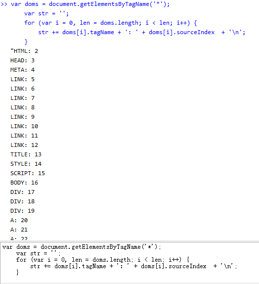
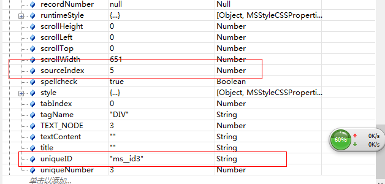
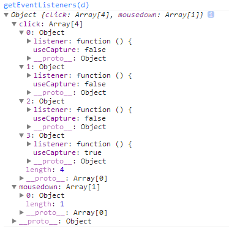
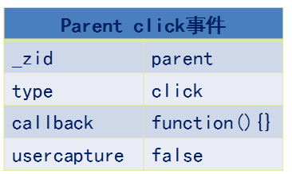

前言
又到了扯淡时间了，我最近在思考javascript事件机制底层的实现，但是暂时没有勇气去看chrome源码，所以今天我来猜测一把
我们今天来猜一猜，探讨探讨，javascript底层事件机制是如何实现的
基础知识
事件捕获/冒泡
我们点击一个span，我可能就想点击一个span，事实上他是先点击document，然后点击事件传递到span的，而且并不会在span停下，span有子元素就会继续往下，最后会依次回传至document，我们这里偷一张图：

我们这里偷了一张图，这张图很好的说明了事件的传播方式
事件冒泡即由最具体的元素（文档嵌套最深节点）接收，然后逐步上传至document
事件捕获会由最先接收到事件的元素然后传向最里边（我们可以将元素想象成一个盒子装一个盒子，而不是一个积木堆积）
这里我们进入dom事件流，这里我们详细看看javascript事件的传递方式
DOM事件流
DOM2级事件规定事件包括三个阶段：
① 事件捕获阶段
② 处于目标阶段
③ 事件冒泡阶段
事件对象
所谓事件对象，是与特定对象相关，并且包含该事件详细信息的对象。
事件对象作为参数传递给事件处理程序（IE8之前通过window.event获得），所有事件对象都有事件类型type与事件目标target（IE8之前的srcElement我们不关注了）
各个事件的事件参数不一样，比如鼠标事件就会有相关坐标，包含和创建他的特定事件有关的属性和方法，触发的事件不一样，参数也不一样（比如鼠标事件就会有坐标信息），我们这里题几个较重要的
PS：以下的兄弟全部是只读的，所以不要妄想去随意更改，IE之前的问题我们就不关注了
bubbles
表明事件是否冒泡
cancelable
表明是否可以取消事件的默认行为
currentTarget
某事件处理程序当前正在处理的那个元素
defaultPrevented
为true表明已经调用了preventDefault（DOM3新增）
eventPhase
调用事件处理程序的阶段：1 捕获；2 处于阶段；3 冒泡阶段
这个属性的变化需要在断点中查看，不然你看到的总是0
target
事件目标（绑定事件那个dom）
trusted
true表明是系统的，false为开发人员自定义的（DOM3新增）
type
事件类型
view
与事件关联的抽象视图，发生事件的window对象
preventDefault
取消事件默认行为，cancelable是true时可以使用
stopPropagation
取消事件捕获/冒泡，bubbles为true才能使用
stopImmediatePropagation
取消事件进一步冒泡，并且组织任何事件处理程序被调用（DOM3新增）
在我们的事件处理内部，this与currentTarget相同
模拟javascript事件机制
在此之前，我们来说几个基础知识点
dom唯一标识
在页面上的dom，每个dom都应该有其唯一标识——_zid（我们这里统一为_zid）/sourceIndex，但是多数浏览器可能认为，这个接口并不需要告诉用户所以我们都不能获得
但是IE将这个接口放出来了——sourceIndex
我们这里以百度首页为例：
1 var doms = document.getElementsByTagName('*'); 2 var str = ''; 3 for (var i = 0, len = doms.length; i < len; i++) { 4 str += doms[i].tagName + ': ' + doms[i].sourceIndex + '\n'; 5 }


可以看到，越是上层的_zid越小
其实，dom _zid生成规则应该是以树的正序而来（好像是吧.....），反正是从上到下，从左到右
有了这个后，我们来看看我们如何获得一个dom的注册事件集合
获取dom注册事件集合
比如我们为一个dom同时绑定了2个click事件，又给他绑定一个keydown事件，那么对于这个dom来说他就具有3个事件了
我们有什么办法可以获得一个dom注册的事件呢？？？
答案很遗憾，浏览器都没有放出api，所以我们暂时不能知道一个dom到底被注册了多少事件......
PS：如果您知道这个问题的答案，请留言
有了以上两个知识点，我们就可以开始今天的扯淡了
注意：下文进入猜想时间
补充点
这里通过园友 JexCheng 的提示，其实一些浏览器是提供了获取dom事件节点的方法的
DOM API是没有。不过浏览器提供了一个调试用的接口。
Chrome在console下可以运行下面这个方法：
getEventListeners(node)，
获得对象上绑定的所有事件监听函数。
注意，是在console里面执行getEventListeners方法
1 <html xmlns="http://www.w3.org/1999/xhtml"> 2 <head> 3 <title></title> 4 </head> 5 <body> 6 <div id="d">ddssdsd</div> 7 <script type="text/javascript"> 8 var node = document.getElementsByTagName('*'); 9 var d = document.getElementById('d'); 10 d.addEventListener('click', function () { 11 alert(); 12 }, false); 13 d.addEventListener('click', function () { 14 alert('我是第二次'); 15 }, false); 16 d.onclick = function () { 17 alert('不规范的绑定'); 18 } 19 d.addEventListener('click', function () { 20 alert(); 21 }, true); 22 23 d.addEventListener('mousedown', function () { 24 console.log('mousedown'); 25 }, true); 26 var evets = typeof getEventListeners == 'function' && getEventListeners(d) 27 </script> 28 </body> 29 </html>
以上代码在chrome中的console结果为：

可以看到，无论何种绑定，这里都是可以获取的，而且获取的对象与我们模拟的对象比较接近
事件注册发生的事
首先，我们为dom注册事件的语法是：
1 dom.addEventListener('click', function () { 2 alert('ddd'); 3 })
以上述代码来说，我作为浏览器，以这个代码来说，在注册阶段我便可以保存以下信息：
1 <html xmlns="http://www.w3.org/1999/xhtml"> 2 <head> 3 <title></title> 4 <style type="text/css"> 5 #p { width: 300px; height: 300px; padding: 10px; border: 1px solid black; } 6 #c { width: 100px; height: 100px; border: 1px solid red; } 7 </style> 8 </head> 9 <body> 10 <div id="p"> 11 parent 12 <div id="c"> 13 child 14 </div> 15 </div> 16 <script type="text/javascript"> 17 var p = document.getElementById('p'), 18 c = document.getElementById('c'); 19 c.addEventListener('click', function () { 20 alert('子节点捕获') 21 }, true); 22 23 c.addEventListener('click', function () { 24 alert('子节点冒泡') 25 }, false); 26 27 p.addEventListener('click', function () { 28 alert('父节点捕获') 29 }, true); 30 31 p.addEventListener('click', function () { 32 alert('父节点冒泡') 33 }, false); 34 </script> 35 </body> 36 </html>

这里，我们为parent和child绑定了click事件，所以浏览器可以获得如下队列结构：
1 /****** 第一步-注册事件 ******/ 2 //页面事件存储在一个队列里 3 //以_zid排序 4 var eventQueue = [ 5 { 6 _zid: 'parent', 7 handlers: { 8 click: { 9 captrue: [fn, fn], 10 bubble: [fn, fn] 11 } 12 } 13 }, 14 { 15 _zid:'child', 16 handlers:{ 17 click: { 18 captrue: [], 19 bubble: [] 20 } 21 } 22 }, 23 { 24 _zid: '_zid', 25 handlers: { 26 //…… 27 } 28 } 29 ];
就那parent这个div来说，我们为他绑定了两个click事件（我们其实可以绑定3个4个或者更多，所以事件集合是一个数组，执行具有先后顺序）
其中注册事件时候，又会分冒泡和捕获，而且这里以_zid排序（比如：document->body->div#p->div#c）
然后第一个阶段就结束了
PS：我想底层c++语言一定有类似的这个队列，而且可以释放接口，让我们获取一个dom所注册的所有事件
注意，此处队列是这样，但是我们真正点击一个元素，可能就只抽取其中一部分关联的对象组成一个新的队列，供下面使用
初始化事件参数
第二步就是初始化事件参数，我们可以通过addEventListener，创建事件参数，但是我们这里简单模拟即可：
注意，为了方便理解，我们这里暂不考虑mousedown
1 /****** 第二步-初始化事件参数 ******/ 2 var Event = {}; 3 Event.type = 'click'; 4 Event.target = el;//当前手指点击最深dom元素 5 //初始化信息 6 //...... 7 //鼠标位置信息等
在这里比较关键的就是我们一定要好好定义我们的target！！！
于是可以进入我们的关键步骤了，触发事件
触发事件
事件触发分三步走，首先是捕获然后是处于阶段最后是冒泡阶段：
1 /****** 第三步-触发事件 ******/ 2 var isTarget = false; 3 Event.eventPhase = 1; 4 //首先是捕获阶段，事件执行至event.target为止，我们这里只关注click 5 for (var index = 0, length = eventQueue.lenth; index < length; index++) { 6 //获取捕获时期该元素的click事件集合 7 var clickHandlers = eventQueue[index].handlers.click.captrue; 8 for (var i = 0, len = clickHandlers.length; i < len; i++) { 9 Event.currentTarget = clickHandlers[i]; //事件处理程序当前正在处理的那个元素 10 //执行至target便跳出循环，不再执行下面的操作 11 if (Event.target._zid == eventQueue[index]._zid) { 12 Event.eventPhase = 2;//当前阶段 13 isTarget = true; 14 } 15 //执行绑定事件 16 clickHandlers[i](Event); 17 //如果阻止冒泡，跳出所有循环，不执行后面的事件 18 if (Event.bubbles) { 19 return; 20 } 21 } 22 //若是当前已经是target便不再向下捕获 23 if(isTarget) break; 24 } 25 Event.eventPhase = 3; 26 //冒泡阶段 27 for(var index = eventQueue.lenth; index !=0; index--) { 28 //如果zid小于等于当前元素，说明不需要处理 29 if(eventQueue[index]._zid <= Event.target._zid) continue; 30 //需要处理的部分了 31 var clickHandlers = eventQueue[index].handlers.click.bubble; 32 33 //此段代码可以重构，暂时不管 34 for (var i = 0, len = clickHandlers.length; i < len; i++) { 35 Event.currentTarget = clickHandlers[i]; //事件处理程序当前正在处理的那个元素 36 //执行绑定事件 37 clickHandlers[i](Event); 38 //如果阻止冒泡，跳出所有循环，不执行后面的事件 39 if (Event.bubbles) { 40 return; 41 } 42 } 43 }
这个注释写的很清楚了应该能表达清楚我的意思，于是我们这里就简单的模拟了事件机制的底层原理了：）
PS：如果您觉得不对，请留言
验证猜想
现在，基础理论提出来了，我们需要验证下这个想法是否站得住脚，所以这里提了几个例子，首先我们回到上面的问题吧
验证一：点击问题
http://sandbox.runjs.cn/show/pesvelp1
首先我们来看这个问题，我们分别为parent与child注册了两个click事件，一次冒泡一次捕获
当我们点击父元素时，我们按照理论的执行逻辑如下：
开始遍历事件队列（由document开始）
当遍历对象如果注册了click事件就会触发，如果阻止了冒泡，执行后便跳出循环不再执行
因为之前并没有注册事件，所以直接到了parent，这里发现parent的_zid与target的_zid相等
于是便将状态置为处于目标阶段，并打上标记跳出捕获循环，不再执行后面的事件句柄
Event.eventPhase = 2;//当前阶段
isTarget = true;
捕获结束后，开始执行冒泡的事件，循环由后向前，开始是child的click事件，但是此时child的_zid大于target的_zid所以继续循环
最后会执行parent以上的dom注册的click事件，没有就算了
至于点击child的逻辑我们这里就不分析了
验证二：突然移除dom
我们这里对上题做一个变形，我们在parent点击时候（捕获阶段）将child div给删除，看看有什么情况
http://sandbox.runjs.cn/show/f1ke5vp8
1 <html xmlns="http://www.w3.org/1999/xhtml"> 2 <head> 3 <title></title> 4 <style type="text/css"> 5 #p { width: 300px; height: 300px; padding: 10px; border: 1px solid black; } 6 #c { width: 100px; height: 100px; border: 1px solid red; } 7 </style> 8 </head> 9 <body> 10 <div id="p"> 11 parent 12 <div id="c"> 13 child 14 </div> 15 </div> 16 <script type="text/javascript"> 17 var p = document.getElementById('p'), 18 c = document.getElementById('c'); 19 c.addEventListener('click', function () { 20 alert('子节点捕获') 21 }, true); 22 23 c.addEventListener('click', function () { 24 alert('子节点冒泡') 25 }, false); 26 27 p.addEventListener('click', function () { 28 alert('父节点捕获') 29 p.removeChild(c); 30 }, true); 31 32 p.addEventListener('click', function () { 33 alert('父节点冒泡') 34 }, false); 35 </script> 36 </body> 37 </html>
其实这里还有一个优化点，相信大家都知道：
移除dom并不会移除事件句柄，这个必须手动释放
就是因为这个原因，我们的整个逻辑仍然会执行，各位自己可以试试
验证三：child阻止冒泡
我们这里再将上题稍加变形，在child 冒泡阶段组织冒泡，其实这个不用说，parent的click不会执行
1 <html xmlns="http://www.w3.org/1999/xhtml"> 2 <head> 3 <title></title> 4 <style type="text/css"> 5 #p { width: 300px; height: 300px; padding: 10px; border: 1px solid black; } 6 #c { width: 100px; height: 100px; border: 1px solid red; } 7 </style> 8 </head> 9 <body> 10 <div id="p"> 11 parent 12 <div id="c"> 13 child 14 </div> 15 </div> 16 <script type="text/javascript"> 17 var p = document.getElementById('p'), 18 c = document.getElementById('c'); 19 c.addEventListener('click', function () { 20 alert('子节点捕获') 21 }, true); 22 23 c.addEventListener('click', function (e) { 24 alert('子节点冒泡') 25 e.stopPropagation(); 26 }, false); 27 28 p.addEventListener('click', function () { 29 alert('父节点捕获') 30 }, true); 31 32 p.addEventListener('click', function () { 33 alert('父节点冒泡') 34 }, false); 35 </script> 36 </body> 37 </html>
验证四：模拟click事件
1 <html xmlns="http://www.w3.org/1999/xhtml"> 2 <head> 3 <title></title> 4 <style type="text/css"> 5 #p { width: 300px; height: 300px; padding: 10px; border: 1px solid black; } 6 #c { width: 100px; height: 100px; border: 1px solid red; } 7 </style> 8 </head> 9 <body> 10 <div id="p"> 11 parent 12 <div id="c"> 13 child 14 </div> 15 </div> 16 <script type="text/javascript"> 17 alert = function (msg) { 18 console.log(msg); 19 } 20 21 var p = document.getElementById('p'), 22 c = document.getElementById('c'); 23 c.addEventListener('click', function (e) { 24 console.log(e); 25 alert('子节点捕获') 26 }, true); 27 c.addEventListener('click', function (e) { 28 console.log(e); 29 alert('子节点冒泡') 30 }, false); 31 32 p.addEventListener('click', function (e) { 33 console.log(e); 34 alert('父节点捕获') 35 }, true); 36 37 p.addEventListener('click', function (e) { 38 console.log(e); 39 alert('父节点冒泡') 40 }, false); 41 42 document.addEventListener('keydown', function (e) { 43 if (e.keyCode == '32') { 44 var type = 'click'; //要触发的事件类型 45 var bubbles = true; //事件是否可以冒泡 46 var cancelable = true; //事件是否可以阻止浏览器默认事件 47 var view = document.defaultView; //与事件关联的视图，该属性默认即可，不管 48 var detail = 0; 49 var screenX = 0; 50 var screenY = 0; 51 var clientX = 0; 52 var clientY = 0; 53 var ctrlKey = false; //是否按下ctrl 54 var altKey = false; //是否按下alt 55 var shiftKey = false; 56 var metaKey = false; 57 var button = 0; //表示按下哪一个鼠标键 58 var relatedTarget = 0; //模拟mousemove或者out时候用到，与事件相关的对象 59 var event = document.createEvent('Events'); 60 event.myFlag = '叶小钗'; 61 event.initEvent(type, bubbles, cancelable, view, detail, screenX, screenY, clientX, clientY, 62 ctrlKey, altKey, shiftKey, metaKey, button, relatedTarget); 63 64 console.log(event); 65 c.dispatchEvent(event); 66 } 67 }, false); 68 </script> 69 </body> 70 </html>
http://sandbox.runjs.cn/show/pesvelp1
我们最后模拟一下click事件，这里按空格便会触发child的click事件，这里依然走我们上述逻辑
所以，我们今天到此为止
结语
今天，我们一起模拟猜测了javascript事件机制的底层实现，这里只做了最简单最单纯的模拟
比如两个平级dom（div）点击时候这里的算法就有一点问题，但是无伤大雅，探讨嘛，至于事情的真相如何，这里就只能抛砖引玉了。
正确答案要需要看chrome源码了，这个留待我们后面解答。
如果您对此文中的想法有和意见或者建议，请留言